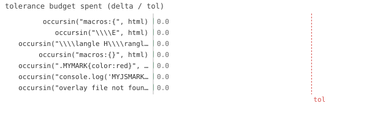

7/7 passed · 0.26s
test_preamble.jl 7/7 PASS
| id | label | got | want | Δ vs tol (kind) |
|---|
| ✓ | t554 | occursin("macros:{", html) | 1.0 | 1.0 | 0.0 vs 0.5 (abs) |
| ✓ | t555 | occursin("\\\\E", html) | 1.0 | 1.0 | 0.0 vs 0.5 (abs) |
| ✓ | t556 | occursin("\\\\langle H\\\\rangle", html) | 1.0 | 1.0 | 0.0 vs 0.5 (abs) |
| ✓ | t557 | occursin("macros:{}", html) | 1.0 | 1.0 | 0.0 vs 0.5 (abs) |
| ✓ | t558 | occursin(".MYMARK{color:red}", html) | 1.0 | 1.0 | 0.0 vs 0.5 (abs) |
| ✓ | t559 | occursin("console.log('MYJSMARK');", html) | 1.0 | 1.0 | 0.0 vs 0.5 (abs) |
| ✓ | t560 | occursin("overlay file not found", html) | 1.0 | 1.0 | 0.0 vs 0.5 (abs) |

⤓ download
Fig. 42. Tolerance budget spent by each check. The dashed line is the pass/fail boundary — a bar close to it passed, but barely.
Sec. 162. preamble extensions (@newcommand -> KaTeX macros, css/js overlay)
Sec. 163. @newcommand is wired into KaTeX macros
Sec. 164. no @newcommand -> empty macros object
Sec. 165. css overlay is inlined after the theme CSS
Sec. 166. js overlay is inlined
Sec. 167. missing overlay file -> diagnostic (non-fatal)
{kind=link}